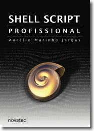

Nessa página está registrada toda a história do porquê eu precisei escrever essa apostila. Também está descrito em detalhes quais foram as ferramentas utilizadas para produzi-la, para quem quiser fazer sua própria apostila!
|  | LANÇAMENTO! Livro Shell Script Profissional 480 páginas. O sucessor da apostila. Prepare-se para uma imersão em shell. |
O motivador
Em Maio de 2003, a minha saída da empresa na qual eu trabalhava em Florianópolis me fez parar para pensar e resolvi mudar o foco de minha carreira profissional.
Decidi ingressar na área de treinamentos técnicos, para desenvolver minhas habilidades didáticas e poder passar aos outros o conhecimento que adquiri nestes 6 anos trabalhando com Informática/Linux.
Tive muito apoio dos amigos que conheci nesse meio nerd, e além de me incentivarem a seguir este caminho dos cursos, também agilizaram os contatos com empresas e pessoas ligadas a treinamentos.
O primeiro curso agendado foi o de "Programação Profissional em Shell", que se propunha a incentivar "scripteiros" de Shell a pensar grande e fazerem verdadeiros programas na linguagem, com ênfase em manutenção e trabalho colaborativo.
A idéia era juntar no mesmo curso vários "acessórios" que turbinam um script transformando-o num programa de verdade, como arquivo de configuração, opções de linha de comando, interface amigável com o usuário, interface Web, interatividade e sobretudo um código limpo e bem comentado.
Apesar de ser programador Shell há anos e já tendo feito vários programas com estas características, eu havia escrito pouca documentação sobre o assunto. Os assuntos estavam todos na cabeça e precisavam ser passados para o papel.
Resultado: era preciso escrever uma apostila DO ZERO.
O processo de criação
Com o sacrifício de finais de semana, passeios, tempo com a mulher, leitura de e-mails, descanso e noites bem dormidas, foi sendo escrita a apostila.
Dia sim dia não, dia sim três dias não, cinco dias sim um não, de maneira não contínua e com cargas horárias diárias variadas o trabalho ficou pronto após 85 horas, espalhadas em 21 dias corridos.
Os textos também foram escritos de maneira não contínua. A primeira aula a ser escrita foi a AULA 07, sobre Bancos de Dados Textuais e a última foi a AULA 01, a Revisão.
Sobre o Dialog, eu já havia escrito dias antes um tutorial completo, então foi tranqüilo compor a aula do assunto. Basicamente ela é composta pelo supra-sumo do tutorial.
Sobre Expressões Regulares eu já tinha o livro completo escrito, mas não pude aproveitar o texto pois era necessária uma linha de aprendizado direta a seguir, e a já existente no livro não pôde ser resumida em poucas páginas. Apenas algumas frases da introdução e a tabela das Diferenças dos Metacaracteres foram aproveitados.
Sobre Caracteres de Controle eu já possuía uma Coluna escrita cujo esqueleto foi aproveitado, mas a linha do texto e vários exemplos tiveram que ser escritos.
Fora estas exceções, todo o resto foi relembrado, pesquisado, testado e escrito do zero.
O ferramental
A apostila foi escrita 100% em texto puro (nada de docbook, sgml, LaTeX, MS Word, PageMaker e outros monstros) utilizando o editor de textos Vim.
O programa txt2tags, que desenvolvi quando estava escrevendo o Guia de Expressões Regulares, foi usado para converter todos os textos para o formato HTML. Neste formato, pude acompanhar pelo navegador Mozilla como ficaria a formatação final da apostila durante o processo de escrita.
Eu gosto de escrever assim, já pensando no formato do conteúdo. Formato, não estética, que são assuntos bem diferentes. É como o HTML e o CSS. Em um você define o formato e no outro a estética. Dependendo da decisão se aquele trecho será escrito como vários subtítulos ou uma lista de itens, a linha de texto segue caminhos diferentes.
A escrita fluiu de maneira muito rápida. É uma delícia escrever no Vim, mãos 100% do tempo no teclado sem precisar do mouse nenhuma única vez sequer. E por usar o txt2tags, não precisei me preocupar com tags e marcações esdrúxulas, simplesmente escrevi meu texto. Depois de um trecho escrito, convertia para HTML e fazia a revisão lendo confortavelmente no Mozilla, com fonte grande e agradável. E assim foi, dia após dia.
Finalmente, após terminada a escrita e com todos os tópicos na ordem correta, o excelente htmldoc foi usado para converter a paginona HTML para um documento PDF, com índice, paginação, configuração de fontes, tamanho das margens e folhas. Ou seja, o htmldoc gerou um PDF pronto para imprimir e encadernar.
Vim, txt2tags, Mozilla e htmldoc. Todos são Software Livre, que funcionam tanto no Linux quanto no Windows e são gratuitos. Um belo exemplo que sim, o Software Livre de qualidade é uma realidade e pode gerenciar todo o processo de criação literária.
- Nota:
- O único software não livre usado na produção da apostila foi o MS Paint (ex-Paintbrush), para fazer desenhos simples. Apesar de existirem excelentes alternativas livres como o Gimp, Xfig e Xpaint, desenhar não é meu forte e o Paint é o único software que domino para desempenhar tal tarefa. Prometo que a próxima apostila não necessitará deste "adendo" vexaminoso :)
O resultado
Foi minha primeira apostila, e como minha experiência anterior eram tutoriais e um livro didático, o conteúdo acabou tendendo mais para o livro do que para a tradicional lista de tópicos que são as apostilas normais.
O resultado é uma apostila autodidata, onde cada assunto é primeiro explicado na teoria, mostrando os porquês e os fundamentos, para somente depois aprender como aplicá-los na prática. Dessa maneira após o curso o aluno pode estudar a apostila, rever os conceitos e praticar.
Acredito que dessa maneira se constrói um conhecimento embasado, mais robusto. Não adianta decorar macetes ou copiar e colar linhas de comando, é preciso entender o "como" e o "porquê".
Há vários códigos completos e funcionais que o aluno pode testar e alterar para reforçar o aprendizado, ou até mesmo para servir de ponto de partida para um programa maior.
Fiz também algumas figuras para ilustrar conceitos de maneira mais didática, embora fique claro que como desenhista sou um ótimo programador :)


{kind=link}